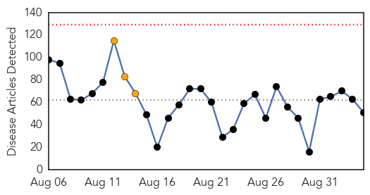
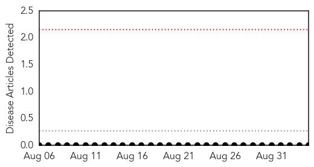

Unknown
30-Day Web Trend
0 alerts, 3 warnings

30-Day Twitter Trend
5 alerts, 0 warnings

Article Locations

Article Confidences

Top Articles:
- 0.996
- Legionnaires' Disease Outbreaks Continue Across the Country
- 0.985
- CDC closer to finding the source and transmitter of the disease
- 0.952
- Rabies found in bats north of Saskatoon, humans exposed in one case
- 0.941
- Unknown Illness Strikes 100+ Students in North Carolina
- 0.940
- Suspected norovirus clears out Person County schools
- 0.935
- 11 Sick in Montana Salmonella Outbreak
- 0.917
- Chicago Tribune
- 0.917
- Chicago Tribune
- 0.917
- Chicago Tribune
- 0.917
- Chicago Tribune
- 0.915
- First polio outbreak in Europe in 5 years
- 0.889
- Baby deaths not due to bacteria: KZN health dept
- 0.887
- Hot water back on at Melrose Houses after discovery of Legionella
- 0.885
- Hendra Virus Confirmed Near Lismore, New South Wales
- 0.870
- Ministry: Water-borne illnesses under control
- 0.866
- An Afghan refugee boy sits on a truck after arriving at a United Nations High Commissioner for Refugees registration centre in Kabul, Afghanistan
- 0.866
- Afghan refugee children, returning from Pakistan, watch a video clip at a mines and explosives awareness program at a UNHCR registration centre in Kabul, Afghanistan
- 0.820
- Mānoa: Statewide immunization rates for HPV lagging
- 0.809
- Heads up: Seneca Valley Virus returns to the Midwest
- 0.796
- Seniors complex takes precautions after confirmed case of Legionnaires’ disease
- 0.794
- Dr. J. Donald Millar, 81, Dies; Led C.D.C. Mission That Helped Eradicate Smallpox
- 0.791
- Squirrel Tests Positive for Plague in South Lake Tahoe Area
- 0.789
- Statement: Foot and mouth disease status in Zimbabwe
- 0.772
- Los Chilangos E. coli Outbreak Updated
- 0.752
- South Sudan: Patients dying after fighting compels medical staff to leave hospital
- 0.750
- NBC29 WVIR Charlottesville, VA News, Sports and Weather
- 0.729
- SA on alert after foot-and-mouth outbreak in Zim
- 0.718
- Finding a way forward in the fight against prion disease
- 0.712
- 2 polio cases found in Ukraine, caused by mutated virus in vaccine
- 0.712
- Health staff await tests after Legionnaires’ disease confirmation
- 0.707
- Rise in Hong Kong medical staff suffering from HIV - but should they be allowed to operate on patients?
- 0.703
- Experts: Unlikely German sailor fell ill in Rio's water
- 0.690
- The Caledonian-Record
- 0.689
- Montana Salmonella Outbreak Traced To Cucumbers
- 0.685
- KZN Health Department denies bacteria caused babies’ death
- 0.668
- Britannica.com
- 0.667
- Renewing health districts for advancing universal health coverage in Africa
- 0.665
- Shortage of health workers to end by 11th Plan
- 0.647
- County reports two rabies incidents in one week
- 0.639
- Experts: Unlikely German sailor fell ill in Rio’s water
- 0.636
- Experts: Unlikely German sailor fell ill in Rio's water
- 0.575
- What can be done to tackle multi-drug resistant TB?
- 0.569
- Google updates health condition feature with more than 900 diseases
- 0.557
- How much water should we drink each day to stay healthy?
- 0.547
- Mom worries about source of stomach parasite cases
- 0.533
- Could a $14 test prevent the spread of MRSA?
- 0.521
- Essentia awarded grant to make communities healthier
- 0.521
- NHI: Doing things differently in KZN
- 0.519
- The most from the coast
- 0.511
- Gastritis symptoms in prison prompts probe
Showing top 50 articles...
Top Tweets:
-
No tweets found for Sep 04, 2015
Hemmorhagic Fever
30-Day Web Trend
0 alerts, 0 warnings

30-Day Twitter Trend
0 alerts, 0 warnings

Article Locations

Article Confidences

Top Articles:
-
No articles found for Sep 04, 2015
Top Tweets:
-
No tweets found for Sep 04, 2015